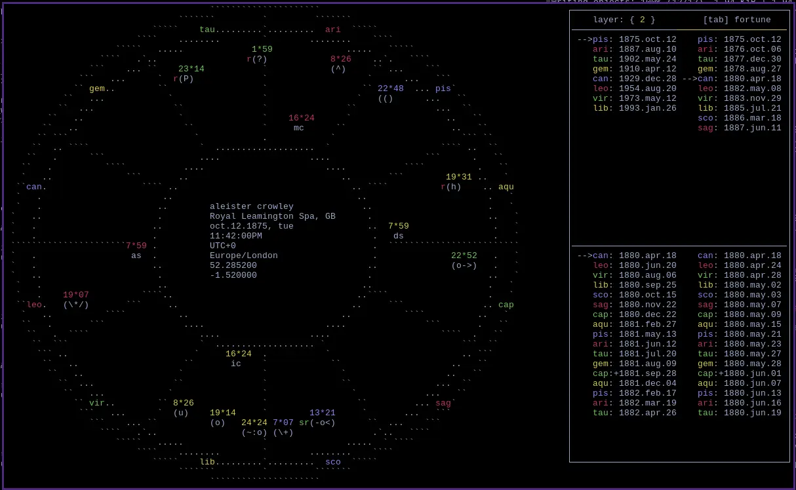

22 September 2026
Article published by: yam
Date of publication: 22 September 2026

opens on the right side of the screen, instantly upon pressing z! in smaller resolutions it pushes aside the data panels to focus the chart. its often bothered me how many softwares would cover the chart or not show it at all. I find it easier to read with both open.
can change layer with the number keys or by pressing h/l, the bar above will be colored to make it pain which layer is selected. the time is calculated from the current charts timezone. loosing of the bond is shown with a +. choose which lot to release from by pressing tab.
Markdown file for this page: https://sweetpotato.press/news/zr.md
This HTML page was generated by the Libreboot Static Site Generator.